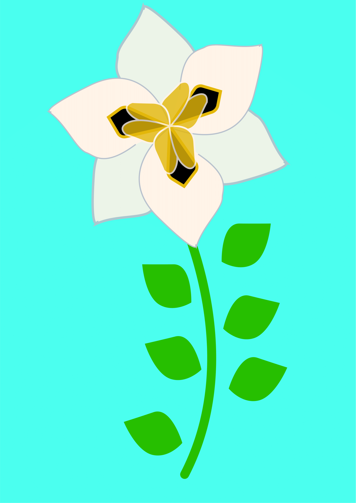
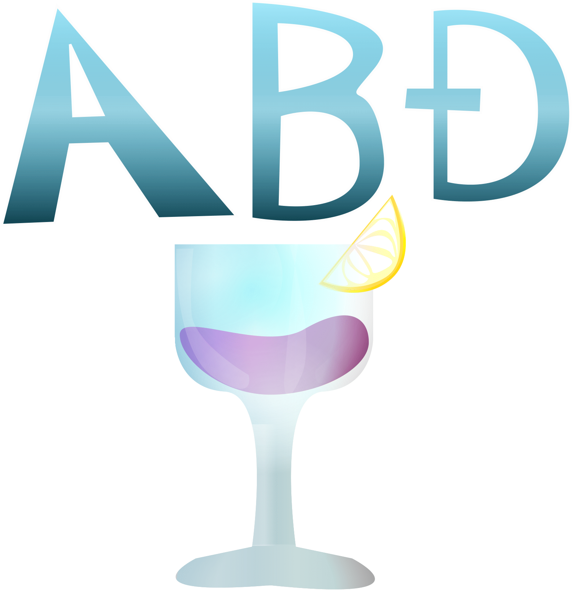
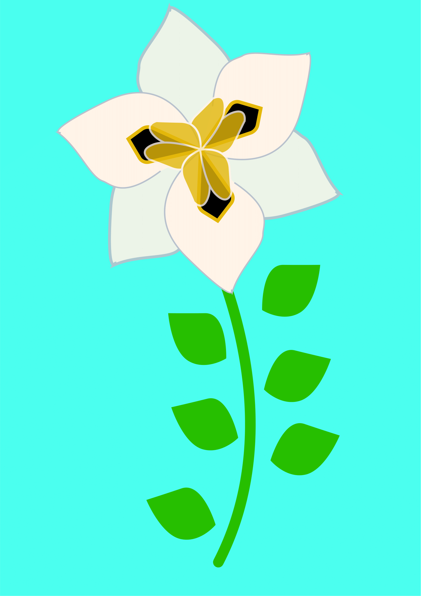
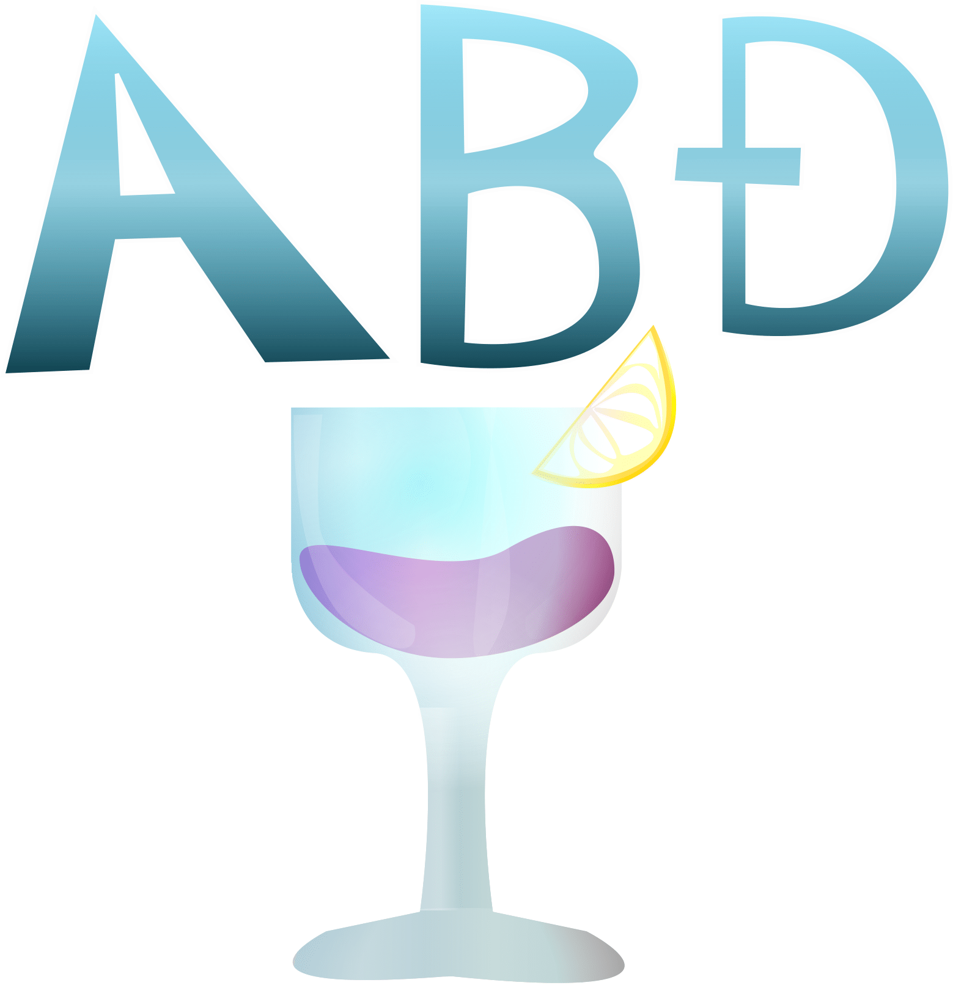
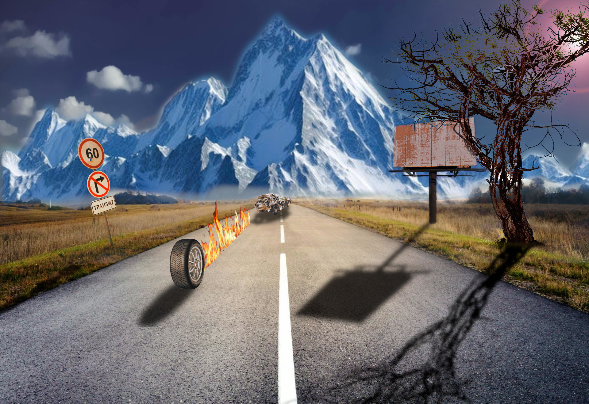
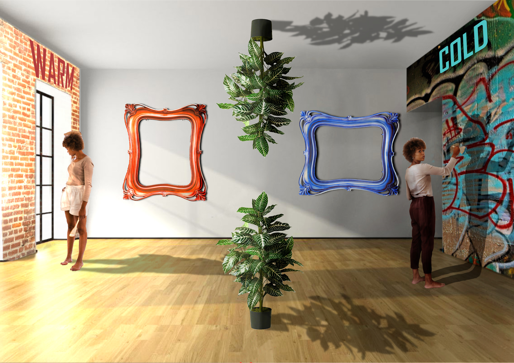
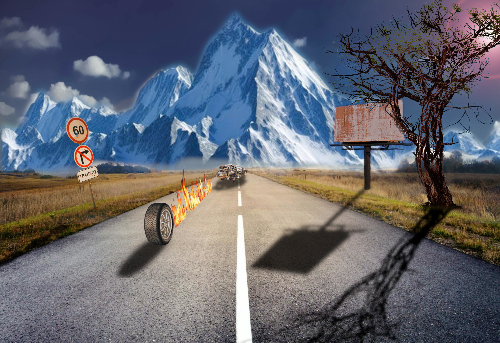
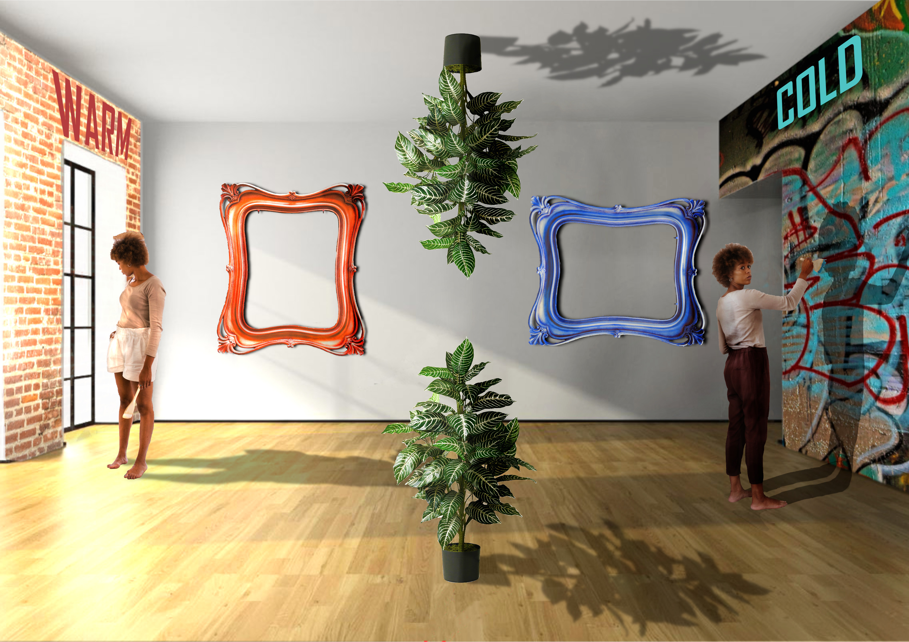

U ovoj cjelini obrađivali smo programe poput FontForge za izradu fonta i Adobe Illustrator za izradu ilustracija pomoću krivulja. Za prvi projektni rad bilo je zadano kopirati postojeću sliku u Illustratoru ili Inkscapu te uklopiti font koji smo napravili za prvu vježbu.

 




U ovovj cjelini nalaze se vježbe koje su obrađene u programima poput Adobe Photoshopa i Gimp-a. U ovoj cjelini učilo se manipulirati fotografijama i stvaranje kolaža. Za drugi projektni rad tražilo se popraviti fotografiju i iskoristit nekoliko različitih elemenata za stvaranje jedinstvenog kolaža uz korištenja različitih ponuđenih alta u programu.
 


Ova cjelina bila je podjeljena na dva djela na web i video. Zadaci za video su se prvi obrađivali, za njih je bilo potrebno koristit program za izradu cinemagrafa i videa. Dok za drugu cjelinu Web koristili su se programi poput Adobe DreamWeavera, notepad++ i Atom. Za web zadatke kodirale su se i izrađivale web stranice pa tako i ova.